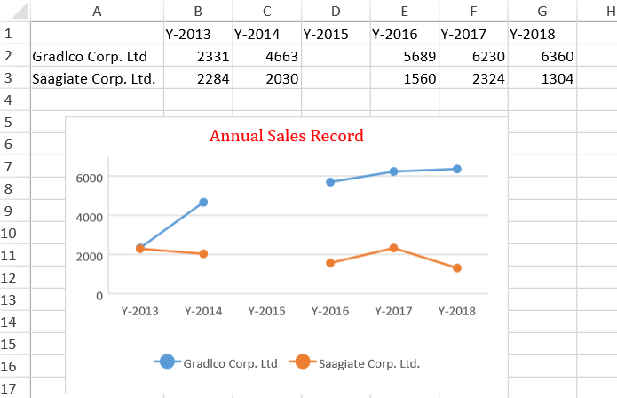
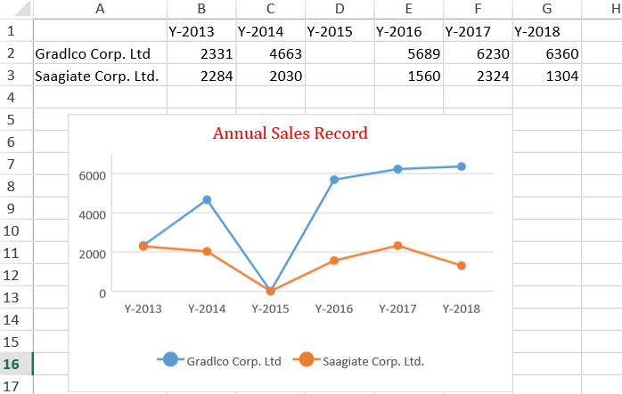
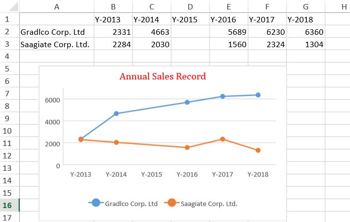

While visualizing data in spreadsheets, you may want to plot blank or empty cells along with other data in the chart.
SpreadJS provides support for displaying empty cells and null values in charts just like in Excel. This feature is helpful in plotting the missing data in a chart and hence facilitates users in quickly identifying and correcting any issues with the data.
With this feature, users can display empty cells or null values as gaps, show empty cells as zero values and connect empty points with a line as per their requirements and specific preferences. By default, charts referencing empty cells in a worksheet automatically fill the missing data by connecting the empty points as a line.
Users can display empty cells as gaps in the chart by using the displayBlanksAs() method of the Chart class.
Example - The following image depicts a chart that compares the annual sales revenues of two different companies. You may notice that the spreadsheet contains blank data in cells D2 and D3. Now, if you want to display these empty cells (D2 and D3) as gaps in the chart, simply set the value of the displayBlanksAs() method as "gaps" and your chart will be displayed as shown in the below screenshot.

Users can display empty cells as zero values in the chart by using the displayBlanksAs() method of the Chart class.
Example - The following image depicts a chart that compares the annual sales revenues of two different companies. You may notice that the spreadsheet contains blank data in cells D2 and D3. Now, if you want to display these empty cells (D2 and D3) as zero values in the chart, simply set the value of the displayBlanksAs() method as "zero" and your chart will be displayed as shown in the below screenshot.

Users can display empty data as a connected line in the chart by using the displayBlanksAs() method of the Chart class.
Example - The following image depicts a chart that compares the annual sales revenues of two different companies. You may notice that the spreadsheet contains blank data in cells D2 and D3. Now, if you want to display these empty cells (D2 and D3) as connected values in the chart, simply set the value of the displayBlanksAs() method as "connected" and your chart will be displayed as shown in the below screenshot.

All chart types support this feature. However, there are some differences how empty cells will be displayed in various charts, as explained below:
Refer to the following example code to display empty cells as gaps in a chart.
| JavaScript |
Copy Code
|
|---|---|
// Initializing Spread var spread = new GC.Spread.Sheets.Workbook(document.getElementById('ss'), { sheetCount: 1 }); // Get the activesheet var activeSheet = spread.getActiveSheet(); activeSheet.suspendPaint(); // Prepare data for chart activeSheet.setValue(0, 1, "Y-2013"); activeSheet.setValue(0, 2, "Y-2014"); activeSheet.setValue(0, 3, "Y-2015"); activeSheet.setValue(0, 4, "Y-2016"); activeSheet.setValue(0, 5, "Y-2017"); activeSheet.setValue(0, 6, "Y-2018"); activeSheet.setValue(1, 0, "Gradlco Corp. Ltd"); activeSheet.setValue(2, 0, "Saagiate Corp. Ltd."); activeSheet.setColumnWidth(0, 120); var dataArray = [ [2331, 4663, , 5689, 6230, 6360], [2284, 2030, , 1560, 2324, 1304] ]; activeSheet.setArray(1, 1, dataArray); // Add lineMarker chart var chart = activeSheet.charts.add('chart1', GC.Spread.Sheets.Charts.ChartType.lineMarkers, 30, 85, 400, 250, 'A1:G3'); // Configure - Displaying blank values as Gaps chart.displayBlanksAs(GC.Spread.Sheets.Charts.DisplayBlanksAs.gaps); // Configure Chart Title var title = chart.title(); title.text = "Annual Sales Record"; title.fontFamily = "Cambria"; title.fontSize = 16; title.color = "Red"; chart.title(title); activeSheet.resumePaint(); |
|